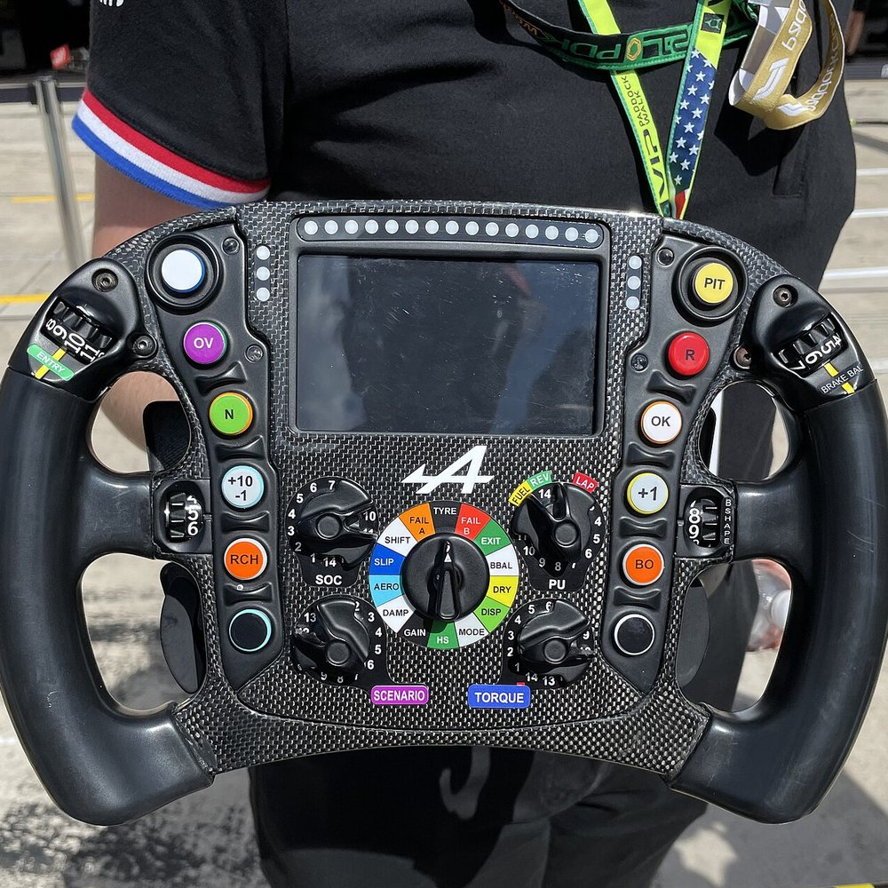
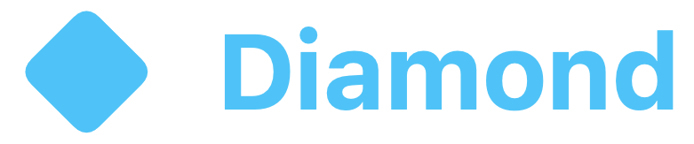

Clássico
Um tabuleiro, um tempo. Supere seu recorde, suba de Novato a Lenda e veja exatamente onde os segundos foram parar.
Um jogo de foco de um minuto para iPhone e Android. Encontre os números em ordem, o mais rápido que puder.
Você se distrai ao ler, estudar ou trabalhar? Uma tabela de Schulte treina justamente essa atenção, e o 49 transforma isso num jogo que dá vontade de voltar.
O 49 é um jogo para praticar o foco, não um produto médico.
Na velocidade de uma corrida, o foco é tudo. Pilotos profissionais treinam atenção, varredura visual e reflexos com a mesma seriedade que o preparo físico, e alguns usam tabelas de Schulte para isso. O 49 transforma esse mesmo treino em um minuto por dia.

300 km/h
Onde um único olhar precisa captar tudo ao seu redor.
1 minuto
Por dia já basta para o mesmo treino. Sem precisar de carro de corrida.
Curto o bastante para caber em qualquer lugar, e feito para que a partida de amanhã seja fácil de começar.
Ainda nesta semana
Todos recebem o mesmo tabuleiro, então você pode comparar com os amigos. Na maioria dos dias, ele também se mexe ou muda de visual. Os dias especiais têm um tabuleiro próprio: uma abóbora no Halloween, um coração no Dia de São Valentim, um novelo de lã no Dia do Gato (17 de fevereiro e 8 de agosto) e um osso no Dia do Cachorro (1º de julho e 26 de agosto).
Missões de hoje
Complete as três para ganhar XP de bônus.
Estatísticas
Sua linha de cima ficou mais rápida.
Os números dali agora levam 0,3 segundo a menos que na semana passada.
Sequência
12 dias seguidos
Você ganha protetores de sequência conforme ela cresce, e eles a salvam no dia em que você não jogar. Um lembrete opcional garante que ela nunca se quebre por descuido.
Uma prova de tempo pura.
Só você, o tabuleiro e o relógio. Sem pontos e sem efeitos, nada para tirar seus olhos dos números. Esta é a tabela de Schulte clássica, e o teste mais puro do seu foco.
Depois de cada partida, você vê seu tempo, ritmo e erros, seus lapsos de foco e sua Cadência: a regularidade com que você encontrou cada número.
Pontos, combos, ×3.
Cada número vale 100 pontos, mais até 50 pela velocidade. Encontre o próximo antes que o tempo do combo acabe e o multiplicador sobe: ×2 com um combo de 5, ×3 com 15.
Um toque errado corta o combo pela metade, mas nunca tira pontos. Quer os efeitos sem a pressão? O Relax mantém os sons e as comemorações e deixa os pontos e os recordes de lado.
Conte de 1 a 49, de 49 a 1 ou em ordem aleatória, em todos os modos. Cada modo guarda seus próprios recordes e sua própria patente.
Um tabuleiro, um tempo. Supere seu recorde, suba de Novato a Lenda e veja exatamente onde os segundos foram parar.
Termine um tabuleiro e o próximo já está esperando. Sua pontuação é o seu ritmo em números por minuto. Pare quando quiser.
O relógio corre contra você. Cada número que você encontra devolve tempo, e cada erro tira um pouco. Até onde você vai?
Jogue 1 contra 1, 2 contra 2 ou com um grupo inteiro, de uma turma da escola a uma equipe do trabalho. Todos recebem exatamente o mesmo tabuleiro, então a única diferença entre vocês é o foco.
Os amigos entram com um código de sala de cinco caracteres, um QR code ou um link, e cada um escolhe um apelido para a partida. Sem ninguém para jogar? No Saguão você entra numa sala aberta, ou a Partida rápida encontra um adversário para você. Não tem um celular para cada um? Passe o seu de mão em mão no modo convidado.
Um tabuleiro, ao vivo, cara a cara. Quem tocar um número primeiro marca o ponto, e ele some para o outro jogador.
De 3 × 3 a 11 × 11
Um 3 × 3 ou 4 × 4 pequenino, um 5 × 5 ou 6 × 6 rápido, o 7 × 7 padrão, e 9 × 9 ou 11 × 11 para quem leva a sério.
Travou? Uma dica mostra onde está o próximo número. Você ganha algumas por dia, e cada uma soma 5 segundos, então as dicas ajudam a aprender, mas nunca rendem um recorde.
Cada modo, direção e estilo tem sua própria patente, definida pelo seu melhor resultado ali. Veja o que cada uma exige no tabuleiro padrão 7 × 7. Os requisitos se ajustam para tabuleiros menores, maiores e mais difíceis.
| Patente | Clássico | Infinito | Contra o Relógio |
|---|---|---|---|
| Termine uma partida | Termine um tabuleiro | Jogue uma rodada | |
| Menos de 2:00 | 25 por minuto | 12 números | |
| Menos de 1:30 | 32 por minuto | 16 números | |
| Menos de 1:10 | 40 por minuto | 22 números | |
| Menos de 0:55 | 48 por minuto | 28 números | |
 | Menos de 0:45 | 56 por minuto | 36 números |
| Menos de 0:35 | 65 por minuto | 48 números |
O tabuleiro lá em cima é uma amostra 4 × 4. As patentes ficam no app, em todos os tamanhos.
Além das patentes, há 100 rankings globais do Game Center: menor tempo e mais pontos por tabuleiro e direção, de hoje, desta semana, deste mês e de todos os tempos. O Desafio Diário tem seu próprio ranking, e vale a sua melhor tentativa.
Elas recompensam velocidade, precisão, foco, combos, sequências e curiosidade. As conquistas em níveis passam por oito medalhas, do bronze ao prismático.

O dia todo, os apps disputam a nossa atenção, e eles são muito bons em vencer. Feeds, notificações e reprodução automática são feitos para tomá-la. Quase nada é feito para devolvê-la a nós.
Acho que isso está ao contrário. O foco é o que permite ler uma página sem se dispersar, estudar sem pegar o celular e fazer o seu melhor trabalho. Assim como força ou velocidade, é algo que você pode treinar.
Por isso peguei a tabela de Schulte, um exercício de papel usado há décadas para treinar atenção, busca visual e leitura dinâmica, e a transformei em um jogo ao qual você quer voltar. Um minuto por partida, um tabuleiro novo todo dia e, depois de cada partida, uma frase sobre o que melhorou.
É um jogo, não um produto médico, e não diagnostica nem trata nada. O que ele oferece é um minuto por dia que treina o seu foco em vez de esgotá-lo.
Para todos. Todos os modos, tabuleiros, visuais e sons, sem nada bloqueado.
$0
Os anúncios aparecem entre as partidas, nunca durante uma, e não nas suas primeiras partidas. Assista a um anúncio e fique 30 minutos sem nenhum.
Para ficar sem nenhum anúncio, com compra dentro do app.
Sem anúncios
Semanal, mensal, anual ou vitalício. O anual começa com uma semana grátis, e o vitalício funciona com o Compartilhamento Familiar. Ele também ajuda a manter vivo um pequeno jogo independente.
O 49 é grátis na App Store. Toque no botão no seu iPhone para baixar.
Quer as novidades antes? Entre no beta no TestFlight.
Android
O 49 para Android está em teste no Google Play, e qualquer pessoa pode participar. No seu celular:
O Google Play diz que não encontra o 49? Espere de 10 a 15 minutos depois de virar testador, limpe o cache do app Google Play Store nas configurações do celular e abra o link de novo.
Contas Google de trabalho ou escola muitas vezes não conseguem entrar no grupo, então use uma pessoal. Fique no teste por pelo menos 14 dias. O Google libera o 49 para todos na Play Store quando testadores suficientes ficam com ele esse tempo. Para jogar online, você precisa de um perfil gratuito do Google Play Games.
Mais alguma dúvida? Pergunte na página de suporte.
O 49 é um jogo de foco de um minuto para iPhone e Android. Em um tabuleiro de 7 × 7, você encontra os números de 1 a 49 em ordem, o mais rápido que puder. É uma tabela de Schulte clássica, com patentes, o Desafio Diário e corridas contra amigos.
Uma grade de números embaralhados que você encontra em ordem, o mais rápido possível. É um exercício clássico de atenção, busca visual e leitura dinâmica, batizado em homenagem ao psiquiatra alemão Walter Schulte.
O Normal é uma prova de tempo pura: sem efeitos e sem pontos, só o seu tempo. O Competitivo adiciona pontos, combos e um multiplicador de até ×3, com efeitos e sons que crescem conforme você joga. Cada estilo tem seus próprios recordes e patentes.
Cada número vale 100 pontos, mais um bônus de velocidade de até 50, que diminui quanto mais você demora. Um combo de 5 dobra seus pontos, e um combo de 15 os triplica. Se o tempo do combo acabar, o combo é perdido, e um toque errado o corta pela metade. Os números perdem valor aos poucos conforme a partida avança, então estudar o tabuleiro antes de começar nunca compensa.
Sim. O Multijogador tem salas 1 contra 1, 2 contra 2 e em grupo, com Corrida, Batalha de pontos, Eliminatória, Corrida fantasma e Roubo. Os amigos entram com um código, um QR code ou um link. Você também pode passar o celular de mão em mão no modo convidado.
Você vai ver seus tempos, seu ritmo e sua precisão melhorarem conforme joga, e as Estatísticas mostram onde. O 49 é um jogo para praticar o foco, não um produto médico. Ele não diagnostica, não trata e não previne nenhuma condição.
Já saiu, grátis na App Store para iPhone. No Android, ele está em teste no Google Play, e qualquer pessoa pode participar.
Um iPhone com iOS 17 ou posterior, ou um celular com Android 9 ou posterior.
Sim, em teste. O 49 para Android está no Google Play em um teste aberto a qualquer pessoa. Veja como participar.
Inglês, polonês, alemão, francês, espanhol, português do Brasil, italiano, japonês e coreano.
Sim. Todos os modos, tabuleiros, visuais e recursos são grátis. Quem joga de graça vê um anúncio entre algumas partidas, nunca durante uma. O Premium remove os anúncios, e você também pode assistir a um anúncio para ficar 30 minutos sem nenhum.
No app, abra Ajustes, depois Premium, e toque em Restaurar Compras com a sessão iniciada na mesma Conta Apple usada na compra.
Sim. Tem suporte completo ao VoiceOver, Reduzir Movimento, Texto em Negrito e gráficos que você pode ouvir como Gráficos de Áudio. Você pode desativar confetes, flashes ou vibração nos ajustes de Acessibilidade. Visão de cores usa cores fáceis de distinguir, e Ocultar números encontrados apaga cada número assim que você o encontra.
Suas partidas, pontuações e estatísticas ficam no seu iPhone e no seu próprio iCloud, e não é preciso criar conta. No Multijogador, os outros jogadores veem seu perfil: apelido, foto, classificação e resultados. O app envia estatísticas de uso anônimas, sem nomes e sem histórico de partidas, e você pode desativá-las nos Ajustes. O Game Center é opcional. Os anúncios da versão gratuita vêm de uma rede de anúncios que pode coletar alguns dados para exibi-los, e o Premium os remove. Veja os detalhes na política de privacidade.
 Bronze
Bronze Prata
Prata Ouro
Ouro Platina
Platina Safira
Safira Ametista
Ametista Rubi
Rubi Prismático
Prismático